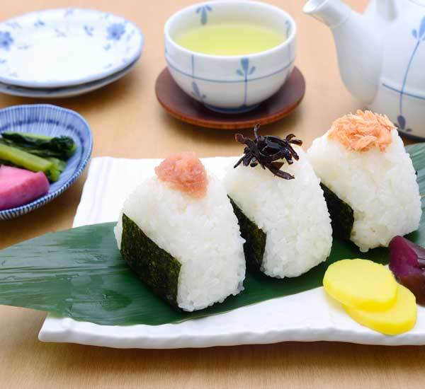

Onigiri

Description
Onigiri is a white rice ball shaped into a triangle. The Onigiri is often filled with vegetables or meat and it is wrapped in nori seaweed. Although it resembles Sushi, the Onigiri doesn't use raw fish. The rice ball is popular in Japan due to its accessibility and affordability. Plus, it's an easy-to-go snack for anyone who is constantly on the run.
Ingredients
- 65kg cooked japanese rice
- 1/4 sheet nori seaweed
- pinch of salt
- shiso perilla leaf
- sesame seeds
Procedure
- Begin by cooking the Japanese rice according to your favourite method.
- With a small amount of salt sprinkled on your hands, mould the rice into small balls or triangles approximately 8cm wide.
- Create a small well in the centre of the rice and put in your choice of ingredients. Then mould the rice with your hands around the well to cover your filling completely.
- Using a sheet of nori seaweed, wrap up your ball of rice.
- Sprinkle some sesame seeds or cut up shiso leaves to put on the rice for a little extra flavour (optional). Enjoy for a snack or during lunch.